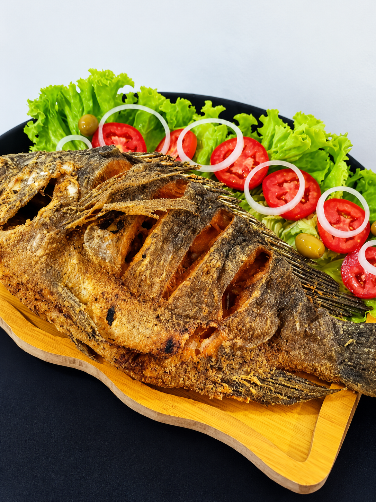

Melhor Restaurante
da Região.
O sabor que faz você querer voltar.
Delícias do PeixeRestaurante
Confiram um Spoiler
Uma prévia para abrir o apetite.
Seu almoço tem endereço.
Em Caruaru, pertinho de você.
Escolha o caminho. A gente cuida do sabor.
Divinópolis · Caruaru, PE
Horário de funcionamento
- Terça a domingo
- 11:00 às 16:00
- Segunda-feira
- Fechado
Ficou alguma dúvida?
A gente facilita por aqui.
E, se precisar, é só chamar.
Vocês fazem delivery?
Sim! Fale pelo WhatsApp para consultar a área de entrega, a taxa e o prazo para o seu endereço.
Onde encontro o cardápio?
Use o botão Ver cardápio completo. Se o link ainda não estiver disponível, nossa equipe pode enviar as opções pelo WhatsApp.
Qual é o horário de funcionamento?
Funcionamos de terça a domingo, das 11:00 às 16:00. Segunda-feira: fechado.
Como faço para chegar?
Estamos na Av. João Soares de Lira, 1688, em Caruaru. Na seção Como chegar, você encontra o mapa e pode abrir a rota no Google Maps.
Foi bom ter você aqui.
Conte para o mundo.
Como foi seu encontro com a gente? Sua avaliação no Google ajuda outras pessoas a conhecer o restaurante e nos ajuda a cuidar de cada detalhe.
Nos avalie no Google
O sabor, o atendimento, o seu momento.
Queremos saber como foi, com suas palavras.